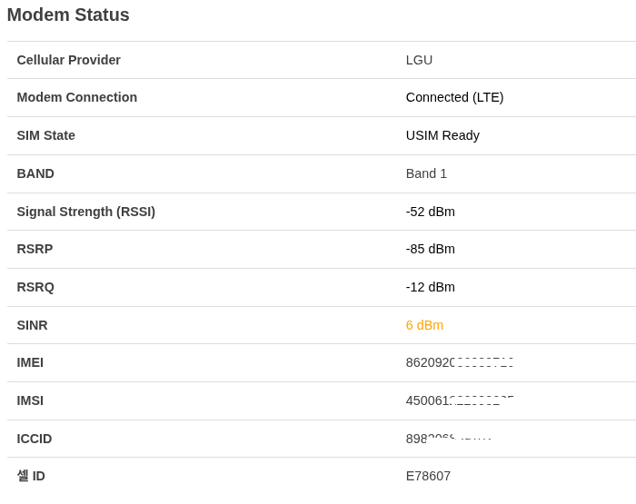
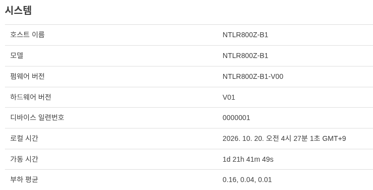
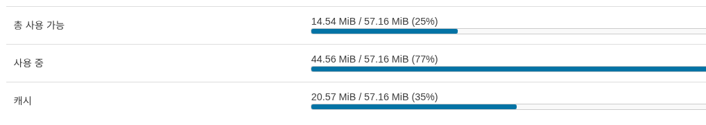
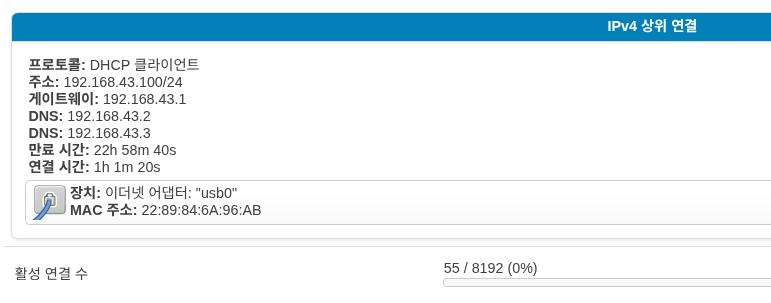
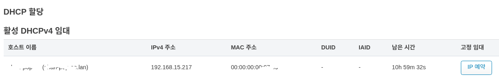
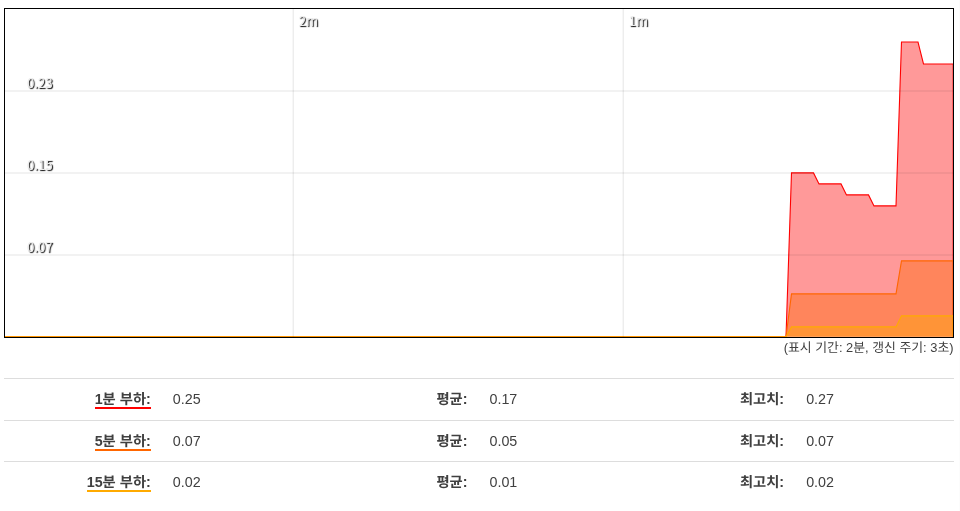
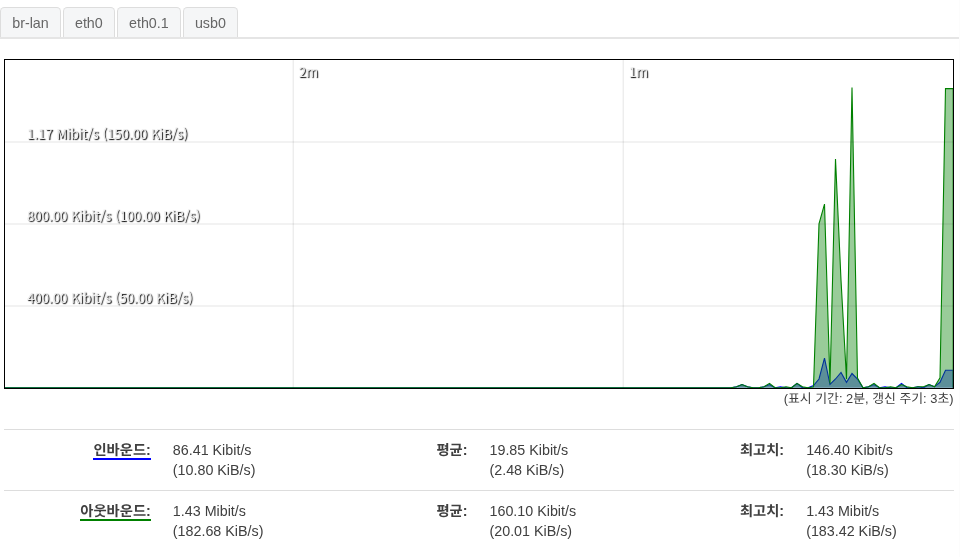
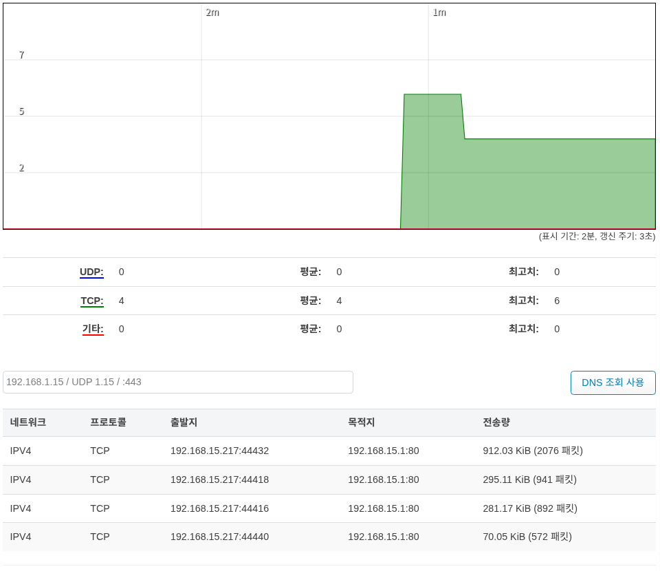

상태
개요
로그인이 성공하면 제일 처음으로 보여지는 페이지 입니다. 대략적인 디바이스에 대한 정보를 확인 할 수 있습니다.
Modem status


모뎀의 정보를 보여 줍니다. 자세한 항목은 모뎀 항목에서 볼수 있습니다.
시스템


라우터에 대한 정보를 보여줍니다.
메모리


메모리 사용량을 보여줍니다.
네트워크


물리적으로 연결된 모뎀의 정보를 보여줍니다.
DHCP 할당


DHCP 할당에 대한 정보를 보여줍니다. IP 예약 을 선택시에 호스트에 대해서 내부 고정 IP 를 설정 합니다.
실시간 그래프
실시간으로 디바이스의 현황을 그래프로 보여줍니다.
부하


부하 평균은 Linux에서 시스템 자원 현황을 모니터링하기 위해 사용하는 지표입니다.
대역폭


사용 가능한 모든 물리적 인터페이스의 대역폭 사용 현황을 표시합니다.
연결


이 장치를 통해 활성화된 연결 현황을 표시합니다. DNS 조회 사용 버튼을 클릭하면 목적지까지의 전송량을 표시해 줍니다.